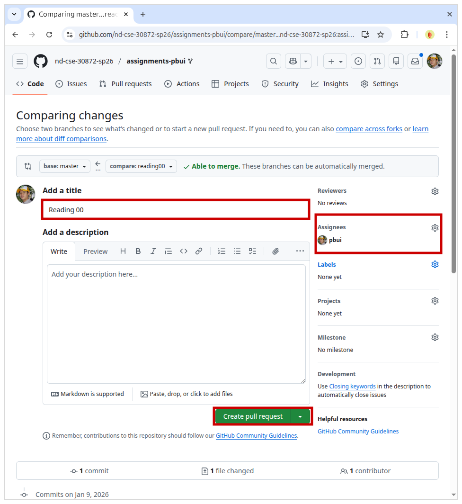
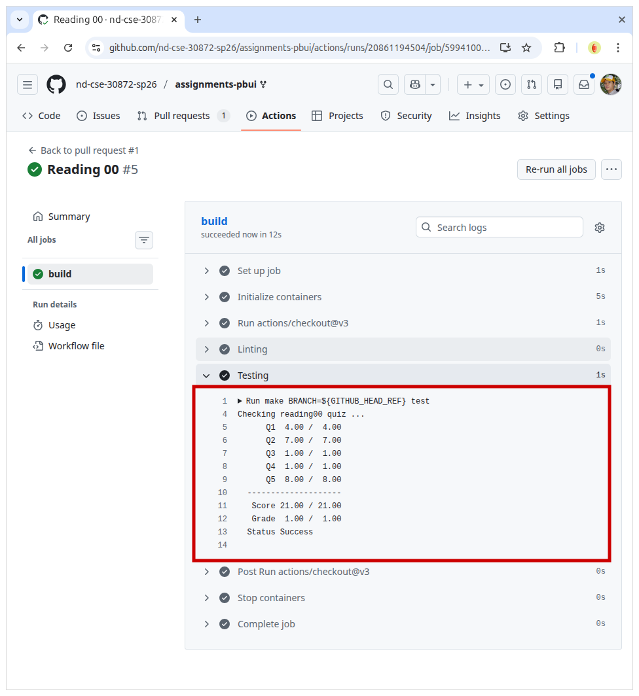

Everyone:
Welcome to CSE 30872 Programming Challenges, which (as the syllabus states) is a "course that revolves around solving brain-teaser and puzzle-type problems that often appear in programming contests, online challenges, and job interviews". What this means is that we will be studying common data structures, algorithms, and programming techniques that are useful in tackling a variety of problems.
TL;DR¶
For this week, you should familiarize yourself with using Slack, setup your GitHub assignments repository, read about I/O and complexity, and then submit your responses to the Reading 00 Quiz.
Course Overview¶
Before this course, most of you have taken Data Structures where you learned about the properties and characteristics of different data structures (and perhaps you even implemented a few). The focus of this class, however, is not in the construction of these data structures, but rather their application. This means we will focus on when to use these data structures and algorithms and how to utilize them effectively rather than what they are. In concrete terms, we will not be implementing say a hash table; instead we will use one to solve a variety of problems.
Following the Hands-On Imperative, you will have the opportunity to put the material we discuss in class into practice via a respectful number of weekly programming Challenges (two a week). Along with these challenges will be Reading assignments to ensure you have a context or background knowledge for what we will be discussing in class. As with Systems Programming or Operating System Principles, these assignments will be automatically graded by dredd via the continuous integration system provided by GitHub.
Although each class will involve some amount of lecture, there will also be a lot of in-class activities and hands-on learning. Because of this, you are expected to come to class regularly and on-time.
Fortunately, however, there are no exams in this class. Instead, we will have four individual in-class programming contests and two programming interviews where you will have an opportunity to demonstrate your mastery and understanding of the material explored in class. Likewise, you will also have to participate in two external programming contests such as those provided by HackerRank or LeetCode.
Task 1: Slack¶
For communication outside of our classroom, we will be using Slack,
which is a real-time chat platform similar to Discord. Your first task is
to create a ND-CSE Slack account (if you have not done so already)
and join the #cse-30872-sp26 channel:
Slack Channel¶
There is a class mailing list, but most day-to-day communication (including office hours and homework help) should take place on Slack.
Therefore, you should check this channel regularly as it is the primary means of communication for the course.
Task 2: GitHub¶
All of your work in this class will be submitted to GitHub using git. Your second task is to setup your GitHub assignments repository by doing the following:
-
Sign-in or create a GitHub account if you do not already have one.
You may associate this account with either your Notre Dame or personal email address. It is up to you.
Fork the class assignments repository from the following template:
This will create a private
assignments-$GITHUB_USERNAMErepository under your own account and linked to the nd-cse-30872-sp26 organization.GitHub Repository¶
The assignments repository will be used for your individual reading and challenge assignments. It must be kept private and only shared with the instructional staff.
Task 3: Student Machines¶
While you are free to use any machine you wish to do your work, the department provides a set of student machines that you can login to and do remote work in an environment crafted for the course. The following steps allow you to clone the assigments you just created to any machine of your choosing.
Student Machines¶
As a reminder, students in this class have access to the following student machines:
student05.cse.nd.edu,student10.cse.nd.edu,student11.cse.nd.edu,student12.cse.nd.edu,student13.cse.nd.edu.-
Before you can clone your git repository, you will need to determine which form of authentication, you wish to use with GitHub.
To remotely access your repository from the command-line, you have two options:
-
Setup SSH Keys: With this method, you generate a local public and private key pair on your computer and then upload the public key to GitHub. When accessing GitHub from the command-line, you will use the private key to authenticate to the server.
This is the recommended way to setup your repository as it will allow for passwordless access.
Setup a Personal Access Token: With this method, GitHub will generate an application specific passsword that you can use with HTTPS. As the PAT is a long string of characters, it is recommended that you use it in conjunction with a password manager or keyring.
Setup SSH Keys¶
Note: If you have already Setup SSH Keys in another course (such as Systems Programming), you do not need to make new keys and can skip this process.
Here is a quick tutorial on how to Setup SSH Keys on the student machines (if you have not done so already):
-
Generate SSH keys if you don't have them yet:
# Accept the defaults, don't make a password if you want to go passwordless $ ssh-keygenCopy the contents of
~/.ssh/id_rsa.pubto the SSH Keys section of your GitHub settings page:# Copy and paste the contents of this file into GitHub $ cat ~/.ssh/id_rsa.pubEdit/create
~/.ssh/configto use this key with GitHub:# Add the following to your config (replace $NETID with your netid) $ vim ~/.ssh/config Host github.com User git Hostname github.com PreferredAuthentications publickey IdentityFile /escnfs/home/$NETID/.ssh/id_rsaOnce this is done, you should be able to do git operations without a password. You will need to accept the host key the first time by typing in
"yes".Clone your git repository on one of the student machines:
# Example of cloning GitHub assignments repository to local or student machine $ git clone git@github.com:nd-cse-30872-sp26/assignments-$GITHUB_USERNAME.git remote: Enumerating objects: 70, done. remote: Counting objects: 100% (70/70), done. remote: Compressing objects: 100% (13/13), done. Receiving objects: 100% (70/70), 6.25 KiB | 1.56 MiB/s, done. Resolving deltas: 100% (4/4), done. remote: Total 70 (delta 4), reused 70 (delta 4), pack-reused 0Edit the
README.mdfile in your assignments repository such that the Name and NetID fields are completed (i.e. replace "Domer McDomerson" and "dmcdomer"). You should commit your change and then push them to GitHub.# Example on editing README in assignments repository and pushing changes to GitHub $ cd assignments-$GITHUB_USERNAME # Go into the assignments directory $ nano README.md # Edit the README.md file $ git add README.md # Mark the file for recording $ git commit -m "Update README" # Record the change [master c550fa1] Update README 1 file changed, 2 insertions(+), 2 deletions(-) $ git push # Send your local changes to GitHubTask 4: Readings¶
The readings for Monday, January 12 are
-
Competitive Programmer's Handbook
-
Chapter 1 Introduction
-
Chapter 2 Time Complexity
Note: Don't worry if you don't get the readings done by Monday, as this is the first week of class.
Task 5: Quiz¶
Once you have done the readings, answer the following Reading 00 Quiz questions:
To submit your answers, you will need create a
answers.jsonoranswers.yamlfile in thereading00folder of your assignments repository:-
For this class, you must use a separate git branch for each assignment. This means that the work for each reading and challenge must be done in a separate branch. To create and switch to a new branch, you can do the following:
$ git switch master # Make sure we are in master branch $ git pull --rebase # Make sure we are up-to-date with github repository $ git switch -c reading00 # Create reading00 branch and check it outOnce you do the above, you should see the following output for the git-branch command:
$ git branch master * reading00The
*indicates that we are currently on thereading00branch.You can either hand-write the
answersfile using your favorite text editor or you can use the online form to generate the JSON data.A hand-written
answers.yamlmay look like the following:q1: [python,perl,ruby] q2: [n2,nf,nlogn,1,n,sqrtn,logn] q3: n q4: nThe equivalent
answers.jsongenerated using the online form may look like the following:{ "q1": [ "python", "perl", "ruby" ], "q2": [ "n2", "nf", "nlogn", "1", "n", "sqrtn", "logn" ], "q3": "n", "q4": "n" }You may use either format. To determine which symbols correspond to which response, take a look at the Reading 00 Quiz file.
To check your answers, you can use the provided
.scripts/check.pyscript:$ cd reading00 # Go into reading00 folder $ $EDITOR answers.json # Edit your answers.json file $ ../.scripts/check.py # Submit reading00 Checking reading00 quiz ... Q1 4.00 / 4.00 Q2 7.00 / 7.00 Q3 1.00 / 1.00 Q4 1.00 / 1.00 Q5 8.00 / 8.00 -------------------- Score 21.00 / 21.00 Grade 1.00 / 1.00 Status SuccessThis script will check your responses by sending your
reading00/answers.jsonfile to dredd, which is the automated grading system. dredd will take your answers and return to you a score and overall status as shown above.Note:
Scoreis how many points you received out of the maximum number of attempted points, whileGradeis the amount of normalized points that will be recorded on Canvas.Moreover,
StatusisSuccessif you have achieved full credit (otherwise, it will showFailure).Once you have your answers file, you need to add, commit the file, and push your commits to GitHub:
$ git add answers.json # Add answers.json to staging area $ git commit -m "Reading 00: Quiz" # Commit work $ git push -u origin reading00 # Push branch to GitHubIterative Approach¶
You may edit and commit changes to your branch as many times as you wish. Just make sure all of your work goes in the appropriate branch and then perform a
git pushwhen you are done.When you are ready for your final submission, you need to create a pull request via the GitHub interface:
-
First, go to your repository's Branches page and then press the New pull request button for the appropriate branch:

Next, edit the Pull Request title to "Reading 00", write a comment if necessary, assign the appropriate TA from the Reading 00 TA List, and then press the "Create pull request" button.
Don't Merge!¶
DO NOT MERGE your own Pull Requests. The TAs use open Pull Requests to keep track of which assignments to grade. Closing them yourself will confuse the TAs and cause a delay in grading.
Every commit on GitHub will automatically check your quiz or code with dredd and the results of each run is displayed in the Checks tab of each commit as shown below:
Once you have made the Pull Request, the TA can verify your work and provide feedback via the discussion form inside the Pull Request. If necessary, you can update your submission by simply commit and pushing to the appropriate branch; the Pull Request will automatically be updated to match your latest work.
Acknowledgments¶
If you collaborated with any other students, or received help from TAs or AI tools on this assignment, please record this support in the
README.mdin thereading00folder and include it with your Pull Request.Graders¶
Once you have committed your work and pushed it to GitHub, remember to create a pull request and assign it to the appropriate teaching assistant from the Reading 00 TA List.
Note: this list changes each week, so be sure to consult the appropriate list for each assignment.
-
-